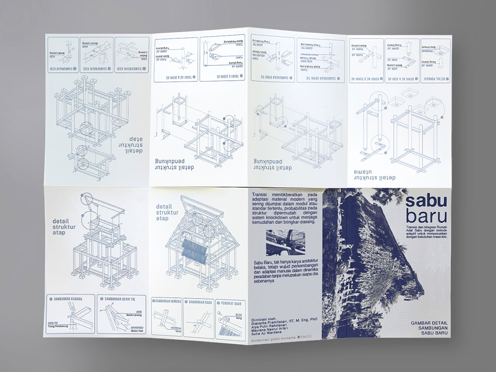
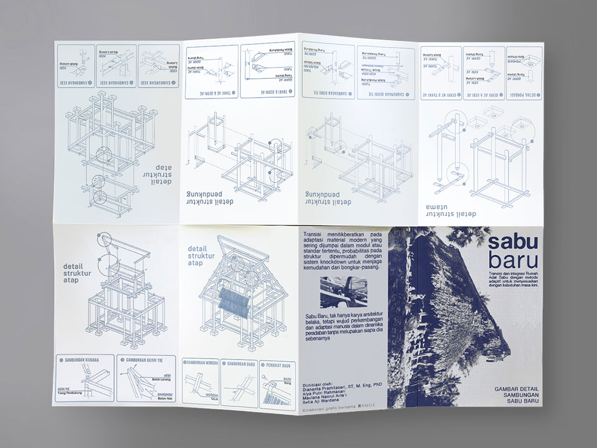

.jpg) 

"Sabu baru" is an innovative architectural concept that merges the traditional architecture of the "Sabu" house—a signature cultural dwelling from Nusa Tenggara Timur (NTT) in Indonesia—with modern, adaptive methods to meet contemporary needs. This integration respects the heritage and aesthetic of the original Sabu houses while incorporating modern materials, technologies, and designs to enhance functionality, sustainability, and comfort for current lifestyles.
This architectural design was initiated by Diana Pramitasari, S.T, M.Eng, Ph.D., Alya Putri Rahmasari, Maulana Nasrul Arfa'i, and Setia Aji Wardana, in collaboration with Ramoe. Their collective expertise and innovative approach have brought a fresh perspective to the preservation and adaptation of traditional Sabu architecture, ensuring that these cultural treasures remain relevant and functional in today's world. Through this collaboration, the team aims to honor the cultural heritage of NTT while promoting sustainable and modern living solutions.